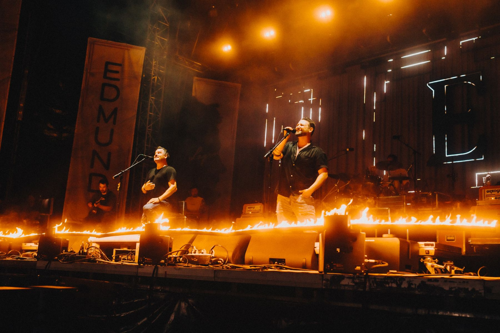
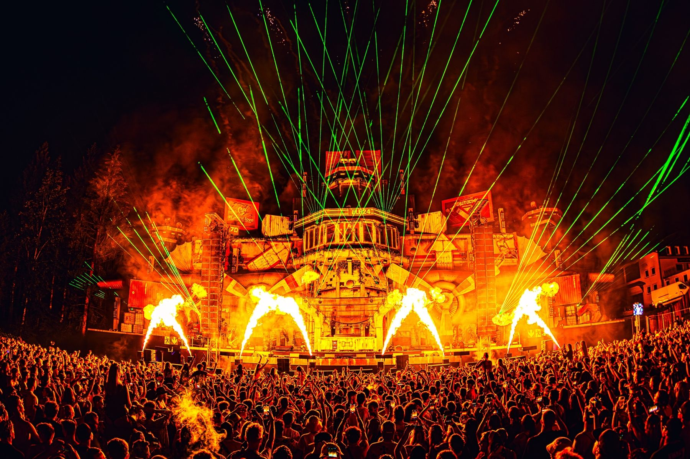
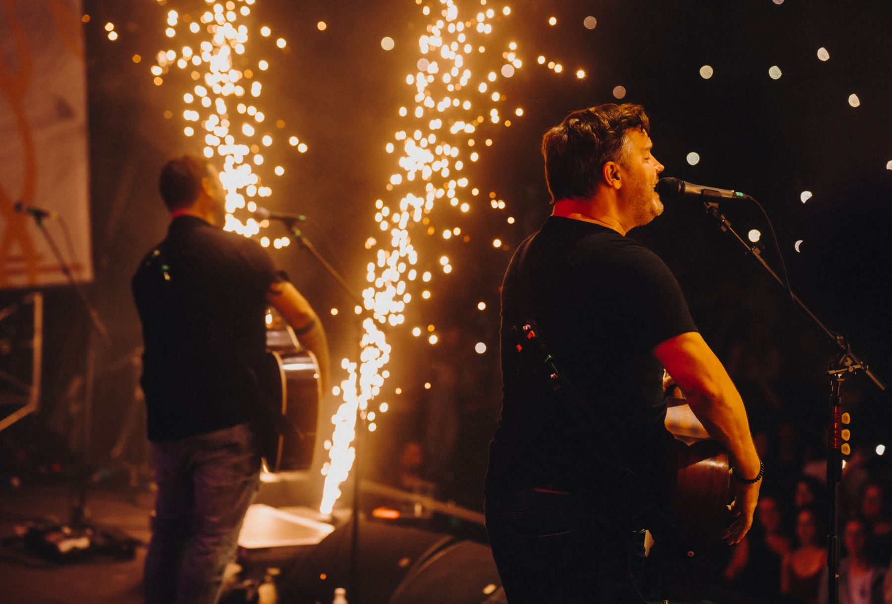
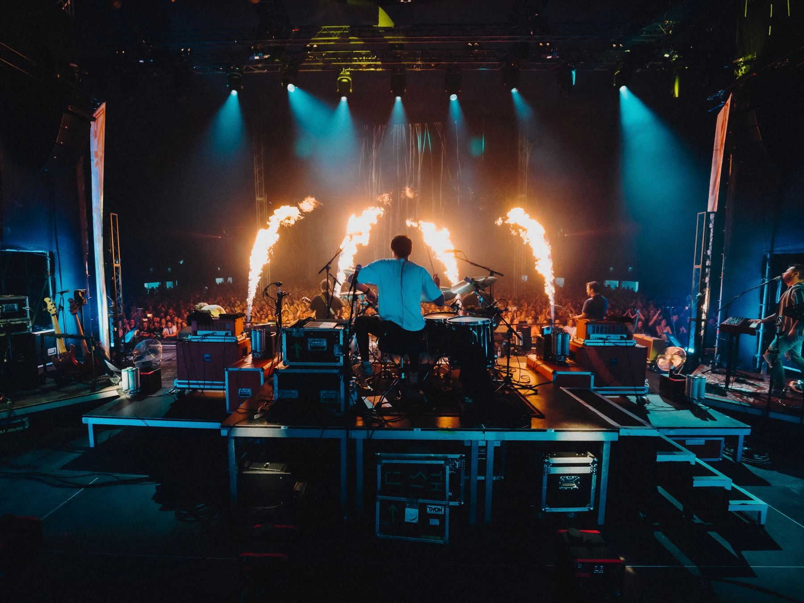
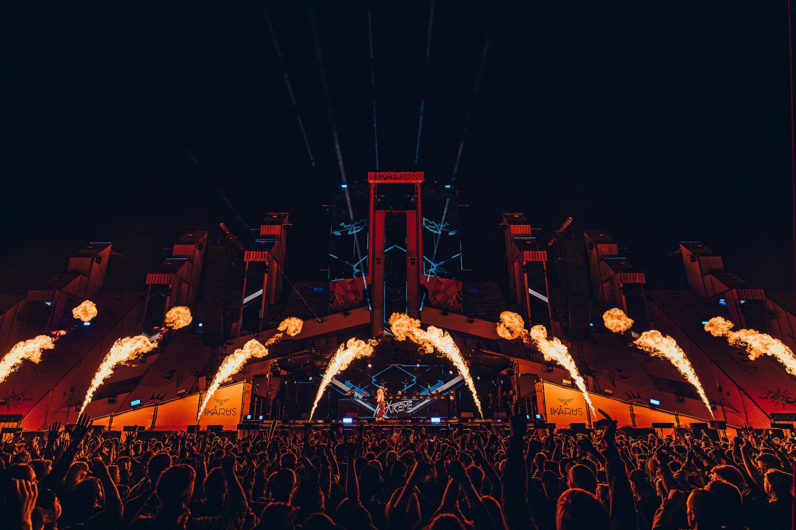
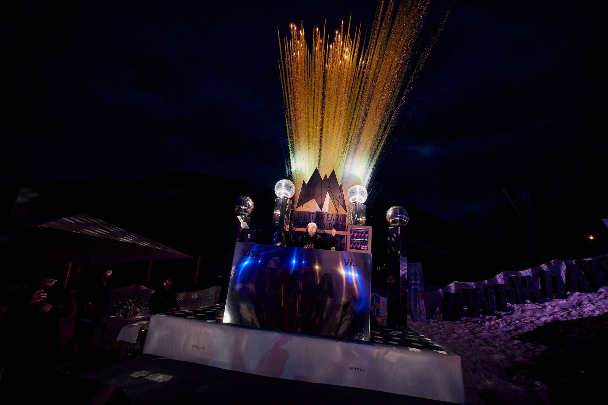
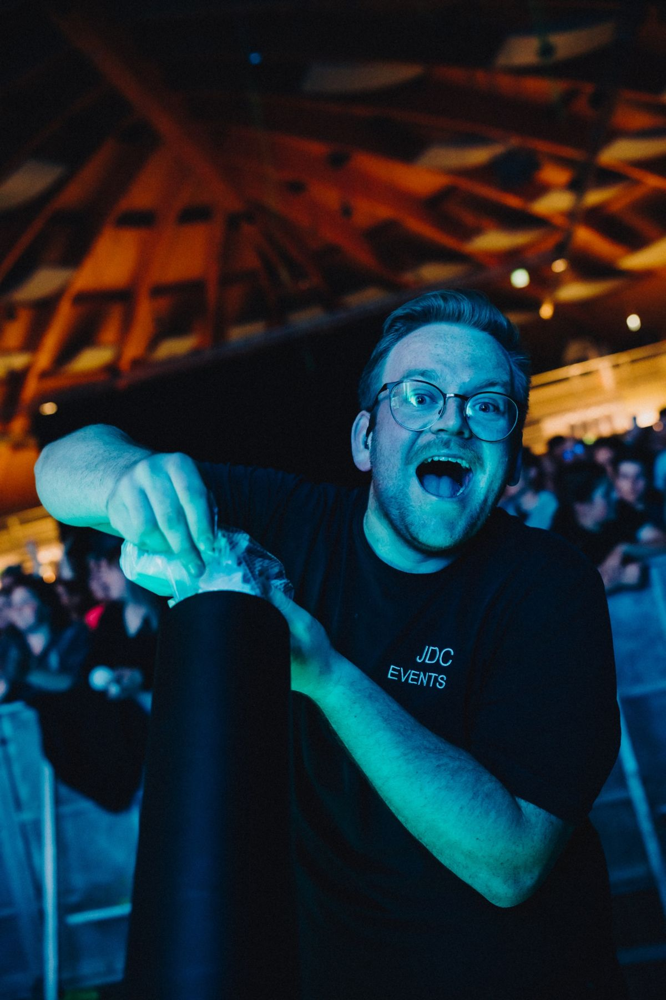

Planung
Effekte passend zu Bühne, Location und Ablauf der Veranstaltung.

JDC Events · Pyrotechnik aus Graz
Flammen, Funken, Konfetti und Bühnenpyrotechnik – von der ersten Idee über Konzept und Genehmigung bis zum Effekt auf der Bühne. Von Graz aus für Konzerte, Festivals und Veranstaltungen im ganzen DACH-Raum.
Leistungen
Sie bekommen alles aus einer Hand: Konzept, Behördenwege, Aufbau und Auslösung während der Show. Um Genehmigungen müssen Sie sich nicht selbst kümmern.
Effekte passend zu Bühne, Location und Ablauf der Veranstaltung.
Ein Effektkonzept, das zu Musik, Dramaturgie und Anlass passt.
Anmeldungen und Genehmigungen bei den Behörden, bei Bedarf abgestimmt mit Location und Feuerwehr.
Aufbau, Programmierung und Auslösung der Effekte während der Show.
Effektgeräte zur Miete für Ihre Veranstaltung.
Effekte
Fontänen und Pyro-Effekte für die großen Momente der Show.
Flammenjets und Flammenlinien – überall im Bühnenbereich, auf, hinter und vor der Bühne.
Funkenfontänen hinter Künstlern und auf der Bühne.
Konfetti und CO₂-Effekte für Höhepunkte und Finale.
Referenzen






Ihr Pyrotechniker aus Graz
Ich habe Event Engineering studiert, bin seit 2018 selbstständig und habe diverse Scheine und Weiterbildungen im Bereich Pyrotechnik.
Mein Anspruch ist eine perfekte Show. Genauigkeit und Liebe zum Detail prägen jeden meiner Jobs, von der Planung bis zum letzten Cue.
Neben Effekten biete ich auch Tontechnik an – auf Wunsch alles aus einer Hand.
Häufige Fragen
Bei Pyrotechnik sollten Sie mindestens 6 bis 8 Wochen einplanen, weil Genehmigungen Zeit brauchen. In der Hauptsaison von Mai bis September am besten noch früher. Kurzfristige Anfragen versuche ich trotzdem möglich zu machen.
Ja. Bei Pyrotechnik übernehme ich die nötigen Anmeldungen und Genehmigungen bei den Behörden und stimme mich bei Bedarf mit Location und Feuerwehr ab. Sie müssen sich darum nicht selbst kümmern.
Ja. Was in Ihrer Location genau möglich ist, hängt von Raumhöhe, Brandschutz und den Vorgaben des Hauses ab. Das klären wir vorab gemeinsam. Ist Pyrotechnik einmal nicht möglich, lässt sich mit Spezialeffekten wie Flammen oder Nebel trotzdem eine starke Show umsetzen.
Ja, Geräte können Sie bei mir auch einfach mieten. Sprechen Sie mich dazu am besten direkt an.
Schreiben Sie mir kurz Datum, Ort und Art der Veranstaltung – Sie bekommen ein Angebot mit passendem Effektkonzept.
← Zur Startseite von JDC Events